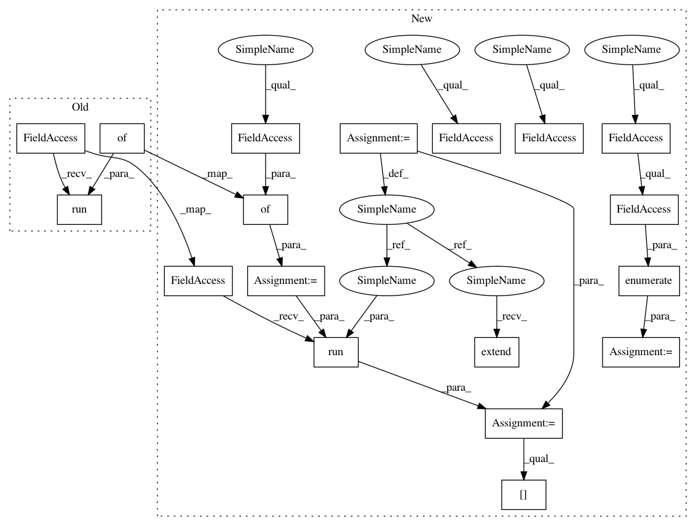

f52db36a739dfd7385c7bb5c60593debbbc3a8b1,tensorforce/models/naf_model.py,NAFModel,update,#NAFModel#Any#,106
Before Change
q_targets = batch["rewards"] + (1. - float_terminals) * self.gamma * np.squeeze(
self.get_target_value_estimate(batch["next_states"]))
self.session.run([self.optimize_op, self.loss, self.training_v, self.advantage, self.q], {
self.q_targets: q_targets,
self.actions: batch["actions"],
self.state: batch["states"]})
def create_outputs(self, last_hidden_layer, scope):
Creates NAF specific outputs.
After Change
q_targets = batch["rewards"] + (1. - float_terminals) * self.gamma * np.squeeze(
self.get_target_value_estimate(batch["next_states"]))
feed_dict = {
self.episode_length: [len(batch["rewards"])],
self.q_targets: q_targets,
self.actions: batch["actions"],
self.state: batch["states"]}
fetches = [self.optimize_op, self.loss, self.training_v, self.advantage, self.q]
fetches.extend(self.training_network.internal_state_outputs)
fetches.extend(self.target_network.internal_state_outputs)
for n, internal_state in enumerate(self.training_network.internal_state_inputs):
feed_dict[internal_state] = self.training_internal_states[n]
for n, internal_state in enumerate(self.target_network.internal_state_inputs):
feed_dict[internal_state] = self.target_internal_states[n]
fetched = self.session.run(fetches, feed_dict)
self.training_internal_states = fetched[2:len(self.training_internal_states)]
self.target_internal_states = fetched[2 + len(self.training_internal_states):]
def create_outputs(self, last_hidden_layer, scope):
In pattern: SUPERPATTERN
Frequency: 3
Non-data size: 18
Instances
Project Name: reinforceio/tensorforce
Commit Name: f52db36a739dfd7385c7bb5c60593debbbc3a8b1
Time: 2017-04-08
Author: mi.schaarschmidt@gmail.com
File Name: tensorforce/models/naf_model.py
Class Name: NAFModel
Method Name: update
Project Name: reinforceio/tensorforce
Commit Name: e2d3382bb4132ddb8aa586bf3c4c570be414f6af
Time: 2017-03-26
Author: aok25@cl.cam.ac.uk
File Name: tensorforce/models/vpg_model.py
Class Name: VPGModel
Method Name: update
Project Name: reinforceio/tensorforce
Commit Name: f52db36a739dfd7385c7bb5c60593debbbc3a8b1
Time: 2017-04-08
Author: mi.schaarschmidt@gmail.com
File Name: tensorforce/models/naf_model.py
Class Name: NAFModel
Method Name: update
Project Name: reinforceio/tensorforce
Commit Name: 8e985e121cd365c6b1aa35cbe39e87843ab789b2
Time: 2017-04-09
Author: mi.schaarschmidt@gmail.com
File Name: tensorforce/models/naf_model.py
Class Name: NAFModel
Method Name: get_action